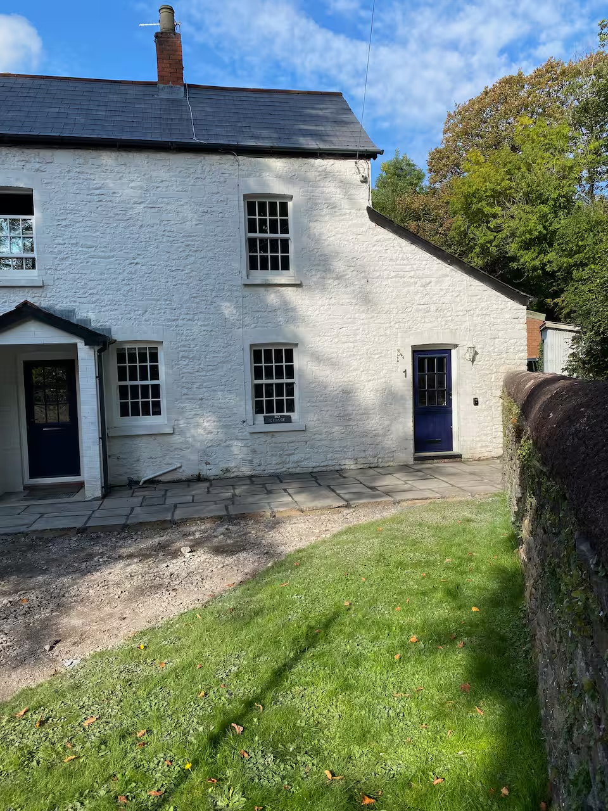
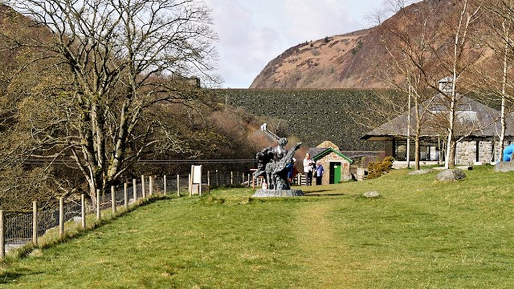
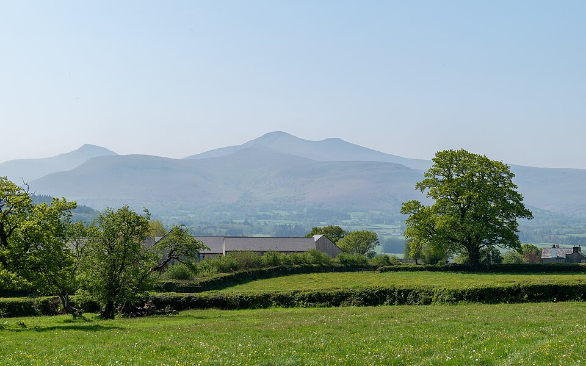
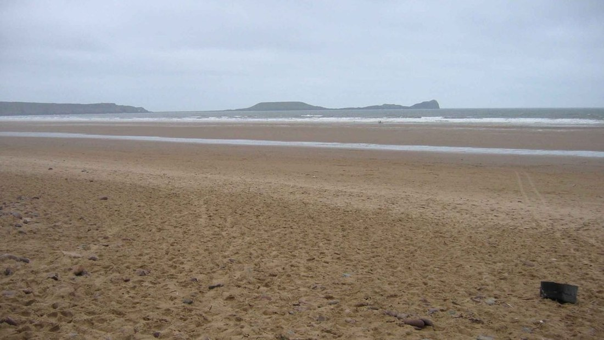
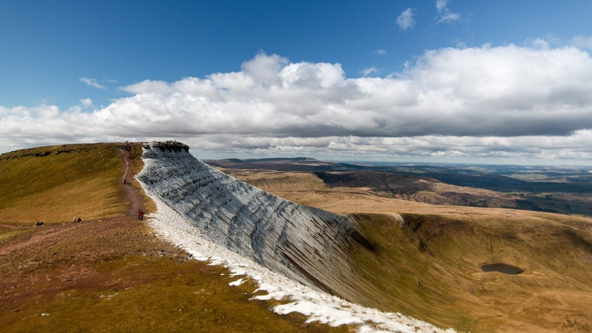
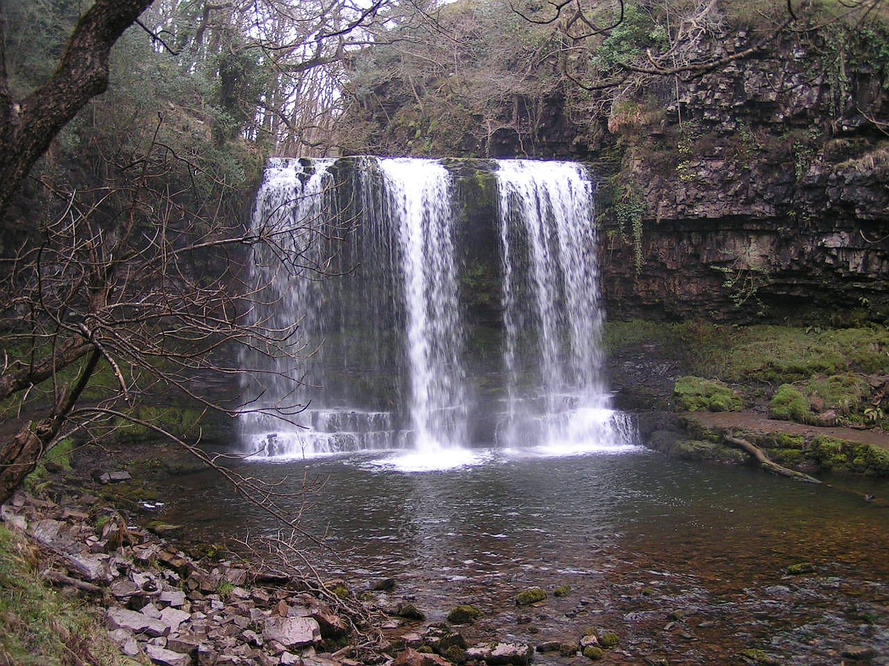
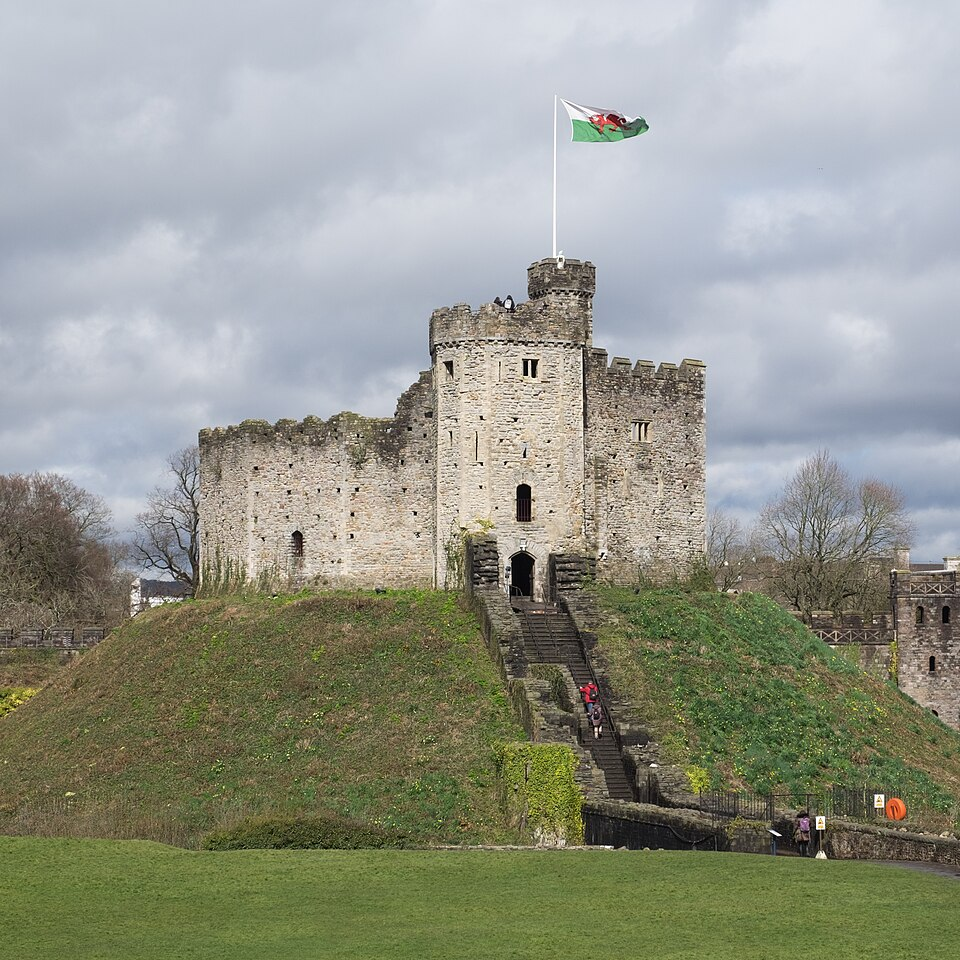

Lidl, Maindy Road
Full supermarket · about 0.8 miMaindy Road, Cathays, Cardiff CF24 4HQ
Customer care: 0800 977 7766
Choose the type of place you want, then compare realistic driving distance from CF10 3EA, direction, best time to go, official links, map navigation and useful nearby stops.
Open the map to view matching destinations.
Loading destination map...
Official visitor guide
Explore protected coast, countryside, gardens, historic houses and family days out across Wales.
Your saved places
Tap the heart on any destination to save it on this device.
No favourites yet. Open Explore and tap a heart to add one.
Live conditions and 12-hour trend
Connecting to live weather...
Tap a marker for temperature, current rain and wind
Open this tab to load the live map.

Entire townhouse in Cardiff, close to Bute Park, Cardiff University and the city centre.
The cottage can be difficult to find and may not appear correctly in every sat-nav. Fiona recommends arriving in daylight and parking on the ambulance-yard side. The property has low doors, narrow stairs and small bathrooms; all toilets are upstairs, so it is not convenient for wheelchair users.
Maindy Road, Cathays, Cardiff CF24 4HQ
Customer care: 0800 977 7766
123-127 Woodville Road, Cardiff CF24 4DZ
Phone: 0330 013 7569
133-139 Queen Street, Cardiff CF10 2BJ
Phone: 029 2034 3748
Excelsior Road, Cardiff CF14 3AT
Phone: 0345 266 6581
Listing details checked on Airbnb on 30 July 2026. Use Airbnb messages for the latest access instructions and host contact details.
Add grocery shopping, packing reminders, bookings and activities. Changes sync across your connected devices.
Connecting shared list...Your list is empty.
Welsh flavours
Traditional savoury dishes, bakes, seafood and local produce worth looking for during the trip.
Small griddle-cooked cakes with currants and warm spice, finished with a dusting of sugar.
Try them: Fresh and slightly warm. Usually vegetarian; commonly contains gluten, dairy and egg.
Find nearbyA warming Welsh broth or stew, traditionally made with lamb or beef, leeks and root vegetables.
Best for: A cool or rainy day. Recipes vary, so ask about meat and allergens.
Find nearbyToast covered with a rich savoury cheese sauce, often sharpened with mustard and sometimes ale.
Good to know: Usually vegetarian; commonly contains gluten, dairy and mustard.
Find nearbyA meat-free Welsh sausage made with cheese, leeks and breadcrumbs, then fried until crisp.
Good to know: Vegetarian, but commonly contains gluten, dairy and egg.
Find nearbyA fruity Welsh tea loaf packed with dried fruit and gentle spice, usually served sliced.
Try it: With tea and a little butter. Ingredients vary by bakery.
Find nearbySlow-cooked laver seaweed with a deep savoury flavour, often served as part of a Welsh breakfast.
Try it: In patties or alongside eggs; breakfast pairings may include meat or shellfish.
Find nearbyA crumbly Welsh cheese with a fresh, lightly tangy character and a creamy layer near the rind.
Look for it: At markets and specialist cheese counters; ask about the producer and rennet.
Find nearbyA distinctive coastal pairing of briny cockles and savoury laver seaweed, strongly associated with South Wales.
Good to know: Contains shellfish. Check daily availability before making a special journey.
Find nearbySave where you parked, open the pin in Google Maps, and get walking directions back.
No parking location saved.
Browse recent public posts for some of the most photogenic stops in the trip finder. Instagram may ask you to sign in.






A practical route from the Cardiff stay, grouped by geography to reduce backtracking. Driving times are approximate; check live weather, tides, road conditions, opening times and bookings before departure.
Pen y Fan · Craig Cerrig-gleisiad · Brecon Canal Basin
If cloud, wind or rain makes the summit unsuitable, replace Pen y Fan with a lower viewpoint and spend longer in Brecon.
Llyn y Fan Fach · Carreg Cennen Castle
Do not add the full Llyn y Fan Fach ridge circuit on the same day as the castle. Roads are narrow and parking is limited.
Broughton Bay · Blue Pool · Rhossili Bay · Worm's Head
Tides decide this day. Blue Pool and Worm's Head have cut-off risk; check tide times, sea state and local advice before going below cliffs.
Visitor Centre · Caban Coch · Garreg Ddu · Pen y Garreg · Craig Goch
Expect remote roads, patchy mobile signal and exposed weather. Arrange fuel or charging before entering the valley. Keep Caerphilly Castle as a separate visit.